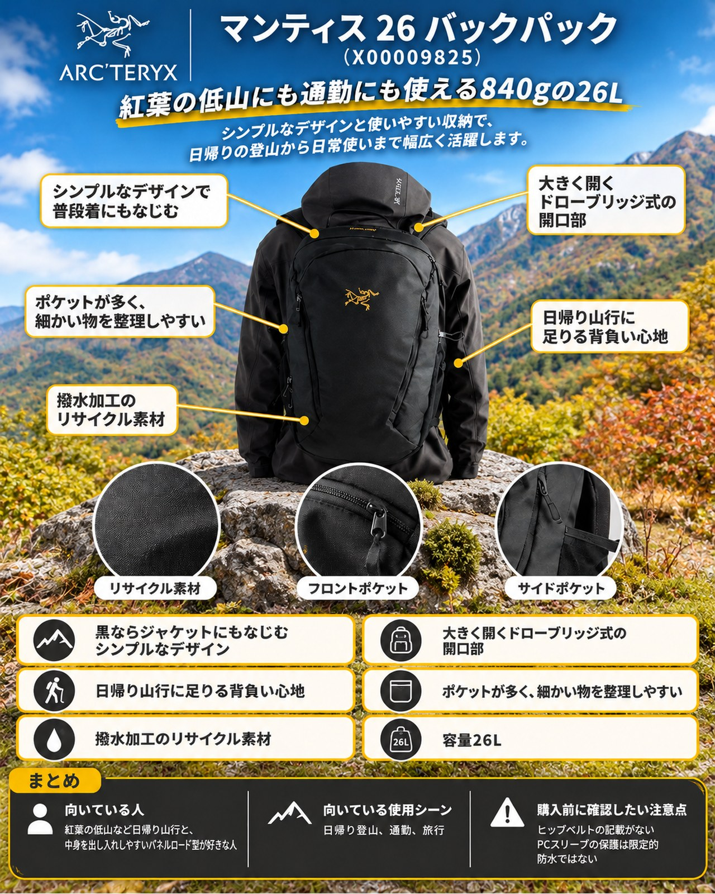

11月第3週は19日から冬型に変わって冷え込み、高山は冬山に入りました。一方で高尾や六甲など近郊の低山は紅葉の見頃です。週末に日帰りの低山歩きを楽しみつつ、平日は通勤や出張にも同じザックを使いたい人に向くのが、アークテリクスの「マンティス 26 バックパック」です。
導入
11月第3週は19日から冬型に変わって冷え込み、高山は冬山に入りました。一方で高尾や六甲など近郊の低山は紅葉の見頃です。週末に日帰りの低山歩きを楽しみつつ、平日は通勤や出張にも同じザックを使いたい人に向くのが、アークテリクスの「マンティス 26 バックパック」です。
背面にはパッド入りバックパネル、フレームシート、アルミ製ステイが入り、内側にはノートパソコンやハイドレーションブラダーを入れられるスリーブがあります。山と街の両方を1つでこなしたい人のための26Lデイパックです。
基本スペック
※価格・カラーは2026年11月20日時点の表示です。
| 項目 | 内容 |
|---|---|
| 商品名 | マンティス 26 バックパック |
| 品番 | X000009825 |
| 容量 | 26L |
| 重量 | 840g |
| 寸法 | 高さ47.5cm × 幅27.5cm × 奥行25cm |
| ボディ素材 | 600デニール リサイクルPET平織（FC0 DWR、ポリエステル100％） |
| 裏地 | 200デニール 平織（FC0 DWR、ポリエステル100％） |
| 開口部 | ドローブリッジ方式（パネルロード型） |
| カラー | Renegade、Dark Jade / Mongoose、Black |
| 価格 | ¥27,500（税込） |
特徴とメリット
大きく開くドローブリッジ式の開口部メインコンパートメントはパネルロード型で、ドローブリッジ方式で開きます。上から詰めるだけのザックと違い、中身を見渡して下に入れた防寒着や行動食も取り出しやすいのが利点です。
日帰り山行に足りる背負い心地パッド入りバックパネルにフレームシートとアルミ製ステイを組み合わせ、背面が安定しやすい作りです。
ポケットが多く、細かい物を整理しやすいキークリップ付きのインナーセキュリティポケット、上部のフラップポケット、2つのフロントジッパーポケット、ストレッチメッシュのサイドポケットを備えます。サイドポケットは調節でき、ボトルなどを固定しやすくなっています。
撥水加工のリサイクル素材ボディと裏地はFC0 DWR（耐久撥水）仕上げのポリエステルで、bluesign®基準を満たす工程で作った素材を使っていると説明されています。
黒ならジャケットにもなじむシンプルなデザイン
シンプルなデザインで普段着に合わせやすく、黒ならジャケットやコートを着る通勤スタイルにもなじみます。カラーはBlack、Renegade、Dark Jade / Mongooseの3色です。PCを入れられるインナースリーブと、鍵をつなげるキークリップがあるので、通勤や出張・旅行の荷物にも向きます。週末はPCを抜いてレインウェアや防寒着を入れれば、そのまま低山の日帰りに使えます。
デメリット・注意点
- ヒップベルトの記載がない：仕様には胸ストラップはありますが、ヒップベルトの記載はありません。重い荷物を長く背負う山行では、腰で荷重を支えられるザックのほうが楽です。
- PCスリーブの保護は限定的：ノートパソコンやハイドレーションブラダーを入れるインナースリーブと説明されているだけで、緩衝材の記載はありません。PCを入れるときは、インナーケースの併用が安心です。
- 防水ではない：生地は撥水仕上げで、防水とはされていません。冬型で天気が変わりやすい時期は、ザックカバーかスタッフバッグを用意しましょう。
- 価格は安くない：¥27,500（税込）は、同じ容量帯の日帰りザックとしては高めだと感じる人もいるでしょう。
向いている人・向いていない人
◎向いている人
- 紅葉の低山など日帰り山行と、通勤・旅行を1つのザックで済ませたい人
- 中身を出し入れしやすいパネルロード型が好きな人
- 小物をポケットで整理したい人
△向いていない人
- 小屋泊や重い荷物での長時間歩行が多い人（ヒップベルト付きの登山用ザックが向きます）
- 冬山や雪山で使うザックを探している人
- 街での荷物が少なく、もっと小さいバッグで足りる人
まとめ
マンティス 26は、フレームシートとアルミ製ステイの入った背面、大きく開くドローブリッジ式の開口部、PCスリーブと多くのポケットを1つにまとめた26Lのデイパックです。本格的な縦走用ではありませんが、晩秋の近郊の低山を日帰りで歩く日と、平日の通勤や旅行の両方で使える1つを探している人には候補になります。
この記事で紹介した商品
価格・重量・在庫は各ブランド公式サイトの記載（確認日つき）にもとづきます。商品を押すと、購入先を選べます。
この記事にはアフィリエイト広告が含まれます。リンク先での購入により、当サイトが報酬を受け取る場合があります。山行の前には、最新の気象とルートの状況を必ずご確認ください。